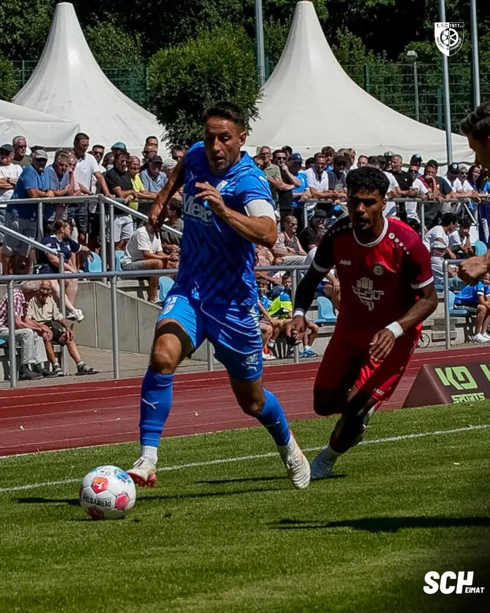
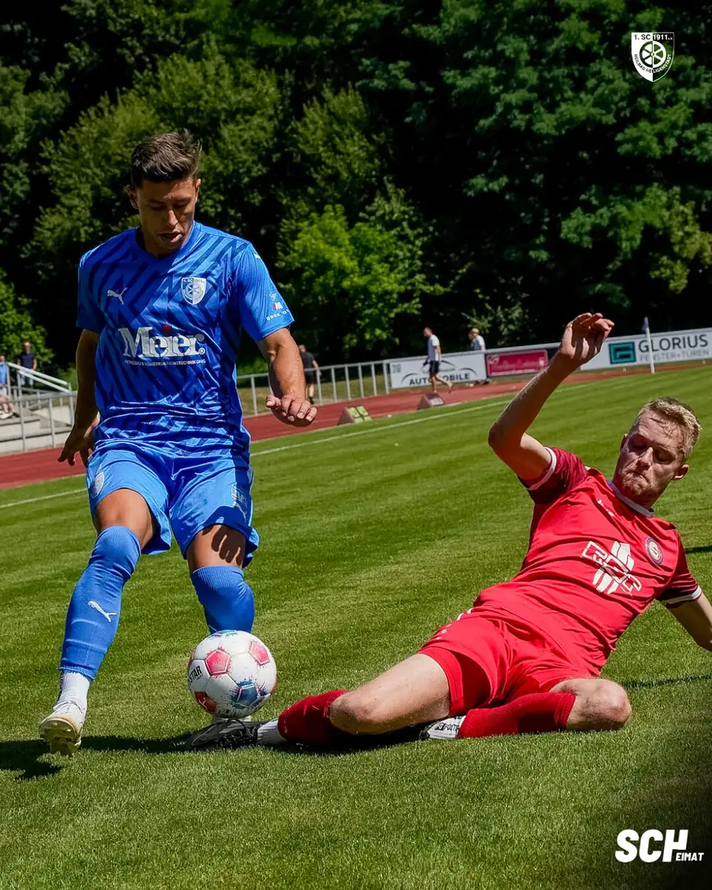
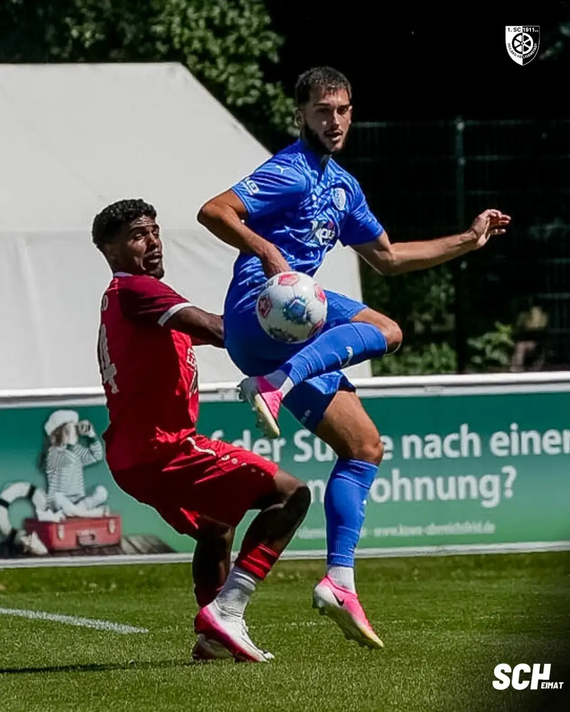
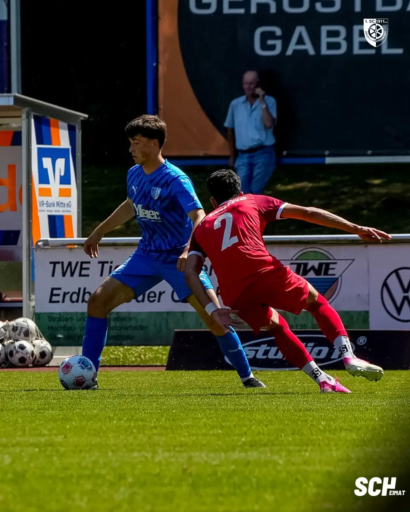
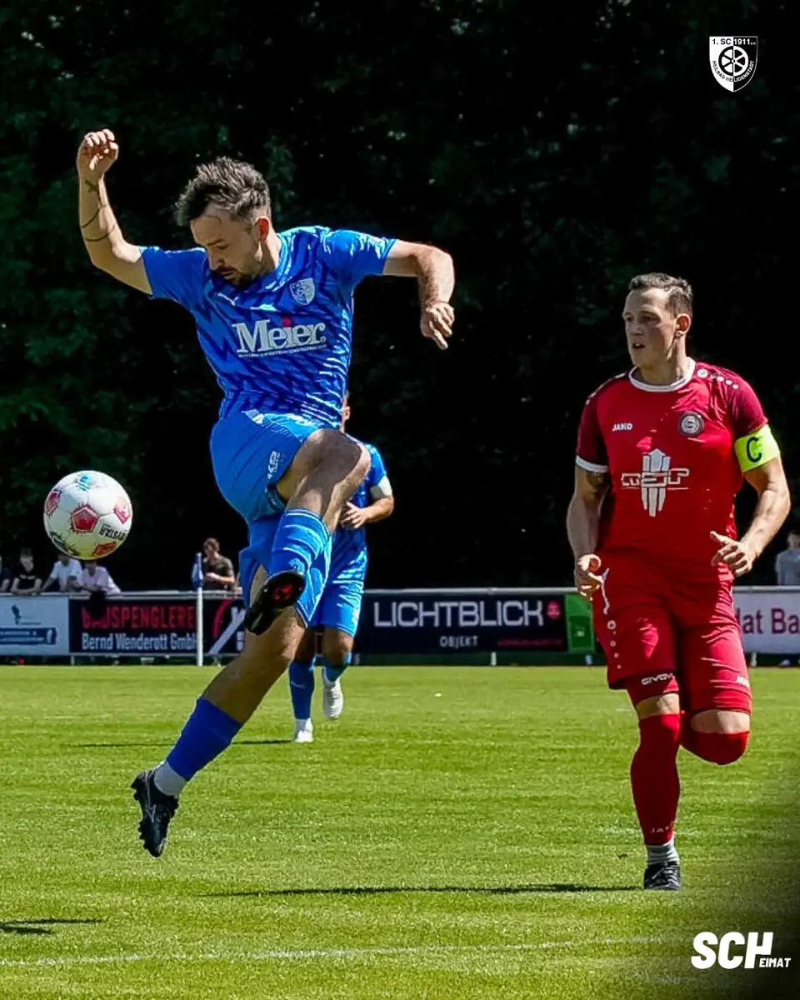
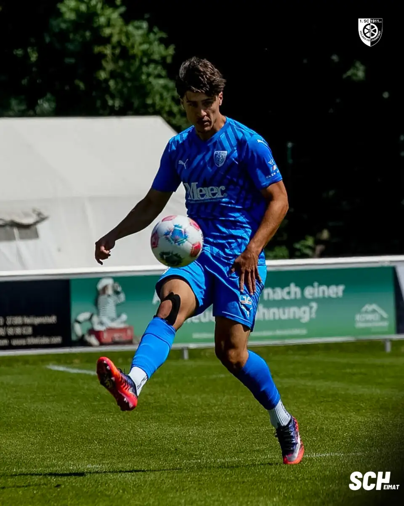
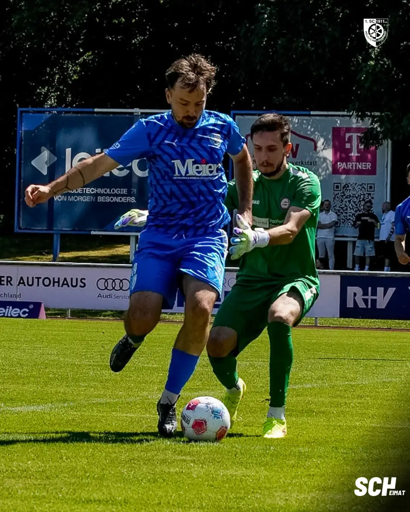
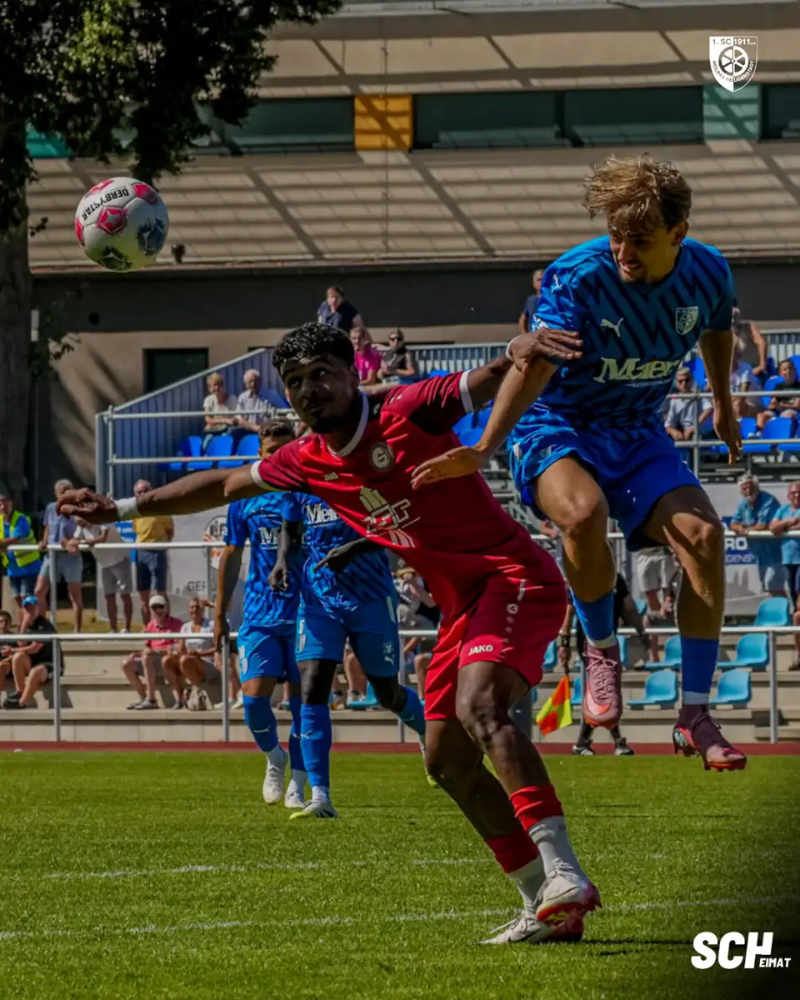
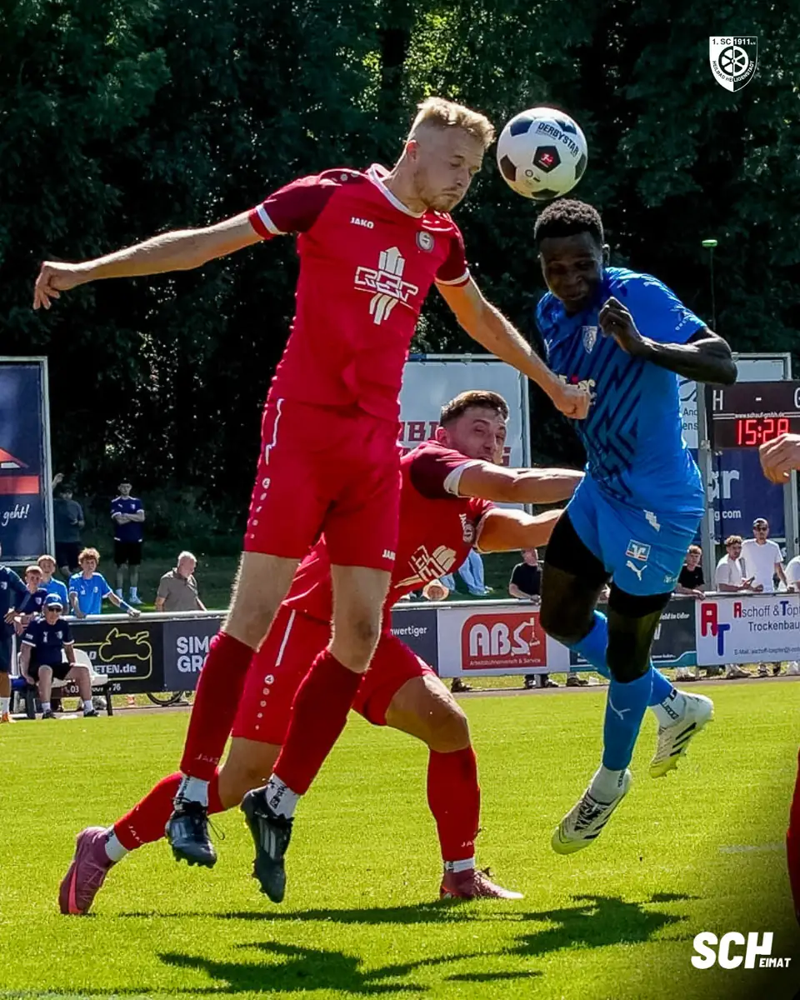
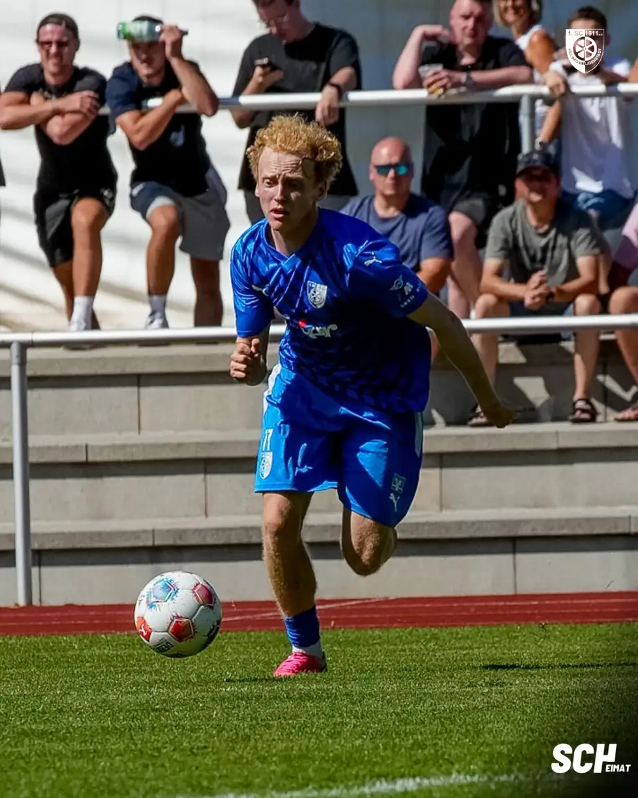

Viel Ballbesitz, keine Tore – SCH verliert Heimauftakt gegen Saalfeld
Der erste Auftritt im Gesundbrunnen in der neuen Verbandsliga-Saison ist für unsere Blau-Weißen nicht so verlaufen, wie es sich Mannschaft, Trainerteam und die 510 Zuschauer auf den Rängen vorgestellt hatten. Trotz viel Ballbesitz, langer Phasen in der gegnerischen Hälfte und spielerischer Überlegenheit musste sich die Ludwig-Elf dem FC Saalfeld mit 0:2 (0:1) geschlagen geben.
Es ist eine Niederlage, die besonders ärgerlich ist. Der SCH bestimmte über weite Strecken das Geschehen, suchte immer wieder den Weg nach vorne – doch vor dem gegnerischen Tor fehlte die letzte Konsequenz. Saalfeld dagegen wartete geduldig auf seine Möglichkeiten und nutzte zwei davon eiskalt.
Viel Ballbesitz, wenig Raum
Vom Anpfiff weg übernahm die Ludwig-Elf die Initiative. Der Ball lief über weite Strecken durch die eigenen Reihen, Saalfeld zog sich tief zurück und überließ dem SCH zunächst das Spiel.
Gerade im Zentrum versuchten Schnellhardt und Hoch immer wieder, Struktur in die Angriffe zu bringen. Für Ole war es zugleich ein besonderer Nachmittag: Nach seiner Rückkehr nach Heiligenstadt stand er erstmals wieder in einem Pflichtspiel im Gesundbrunnen auf dem Platz. Doch so groß die Spielanteile auch waren, so schwierig blieb die Suche nach den entscheidenden Räumen. Die Gäste verteidigten kompakt, machten das Zentrum eng und zwangen unsere Mannschaft immer wieder dazu, neu aufzubauen. Vieles sah bis zum letzten Drittel ordentlich aus – genau dort fehlten anschließend aber Tempo, Präzision und der letzte entschlossene Pass.
Wolanski fehlen zweimal nur Zentimeter
Ganz ohne Möglichkeiten blieb der SCH dennoch nicht. Vor allem Maciej Wolanski hatte die Führung auf dem Fuß. Zweimal tauchte unser Angreifer gefährlich vor dem Saalfelder Tor auf, zweimal war Gästekeeper Volodymyr Onyshchenko zur Stelle und verhinderte mit starken Paraden den Heiligenstädter Treffer. Es waren genau diese Momente, die dem Spiel eine andere Richtung hätten geben können. Ein Tor hätte die tief stehenden Gäste gezwungen, ihre defensive Haltung ein Stück weit aufzugeben. Doch der Ball wollte nicht über die Linie. Und während unsere Mannschaft weiter anlief, zeigte Saalfeld kurz vor der Pause, wie wenig es an diesem Nachmittag brauchte.
Ein Gegenstoß verändert das Spiel
In der 41. Minute ging es plötzlich schnell. Stan Kleyla setzte sich auf der Außenbahn durch und brachte den Ball flach in den Strafraum. Dort stand Ahmed Saeid richtig und vollendete aus kurzer Distanz zum 0:1. Ein bitterer Rückschlag – vor allem, weil sich bis zu diesem Zeitpunkt ein Großteil des Spiels in der Hälfte der Gäste abgespielt hatte.
Statt mit einer Führung oder zumindest einem torlosen Remis ging es für den SCH mit einem Rückstand in die Kabine.
Der SCH rennt an – Saalfeld hält dagegen
Nach dem Seitenwechsel änderte sich am Bild zunächst wenig. Unsere Mannschaft hatte den Ball, suchte den Weg nach vorne und versuchte, den Druck zu erhöhen.
Alexander Ludwig reagierte auch personell und brachte im Verlauf der zweiten Halbzeit frische Kräfte. Der erhoffte Effekt blieb allerdings aus. Zu häufig fehlte beim letzten Pass die Genauigkeit, einige Angriffe endeten durch einfache Ballverluste und auch aus der Distanz entwickelte der SCH zu wenig Gefahr.
Die Mannschaft wollte, sie investierte und gab die Partie nicht auf. Was fehlte, war der Moment, der ein solches Spiel noch einmal kippen kann. Ein abgefälschter Ball, ein Standard, ein konsequenter Abschluss – irgendetwas, das den Knoten löst.
Dieser Moment kam nicht.
Saalfeld setzt den Schlusspunkt
Stattdessen fiel die Entscheidung auf der anderen Seite.
Der SCH warf in der Schlussphase noch einmal alles nach vorne und öffnete damit zwangsläufig Räume. In der ersten Minute der Nachspielzeit nutzten die Gäste einen weiteren ihrer wenigen Gegenstöße. Stan Kleyla war auf und davon und ließ Aleksandar Stankovic keine Chance. Das 0:2 in der 90.+1 Minute war die endgültige Entscheidung.
Ein Ergebnis, das sich gemessen an den Spielanteilen deutlich anfühlte – gleichzeitig aber auch zeigte, worauf es im Fußball am Ende ankommt. Saalfeld machte aus wenigen Möglichkeiten zwei Tore. Dem SCH gelang trotz seiner Überlegenheit keines.
„Wir haben keine Lösung gefunden“
Entsprechend fiel auch die Einschätzung von Cheftrainer Alexander Ludwig nach seinem ersten Pflichtspiel als SCH-Trainer im Gesundbrunnen aus.
„Wir haben gegen den defensiven Gegner keine Lösung gefunden, sind vergebens hinter dem Rückstand hergelaufen“, fasste unser Trainer die 90 Minuten zusammen.
Eine treffende Beschreibung für einen Nachmittag, an dem unsere Mannschaft zwar viel vom Spiel hatte, daraus aber zu wenig machte.
Ein Rückschlag, aber erst der Anfang
Nach dem 1:1 zum Saisonauftakt in Bad Frankenhausen und der 0:2-Heimniederlage gegen Saalfeld steht nach den ersten beiden Spieltagen ein Punkt auf dem Konto. Das ist weniger, als sich die Mannschaft zum Start vorgenommen hatte. Trotzdem sind zwei Spieltage eben auch nur zwei Spieltage. Dass dabei noch nicht alles funktioniert, hat der Heimauftakt deutlich gezeigt.
Die Niederlage gegen Saalfeld darf deshalb ärgern – und sie soll es auch. Gerade weil die Mannschaft über weite Strecken das Spiel bestimmte, bleibt das Gefühl, dass an diesem Nachmittag mehr möglich gewesen wäre.
Nun geht es darum, die richtigen Schlüsse daraus zu ziehen: mehr Zielstrebigkeit im letzten Drittel, mehr Konsequenz vor dem Tor und die richtigen Lösungen in den entscheidenden Situationen zu finden.
Denn die Saison hat gerade erst begonnen. Und nach diesem ersten enttäuschenden Nachmittag im Gesundbrunnen gilt vor allem eines: weiterarbeiten.
Spieldaten
1. SC 1911 Heiligenstadt – FC Saalfeld 0:2 (0:1)
SC Heiligenstadt
Stankovic – Wolanski – Abdoul Aziz – Aschoff (64. Grimm) – Jeschke – Lerch (64. Fiedler) – Hoch – Michalek – Dornieden (64. Wilhelm) – Schnellhardt – Vogt
FC Saalfeld
Onyshchenko – Aldaeiki – Hutschenreuter – Kaldeborn – Rabel – Kleyla (90. Nguyen) – Brömel – R. Ensenbach (78. König) – P. Ensenbach – Bayer – Saeid (78. Moiseienko)
Schiedsrichter
Moszczynski
Zuschauer
510
Tore
0:1 Schlätzer (43.), 0:2 Kleyla (90.)









